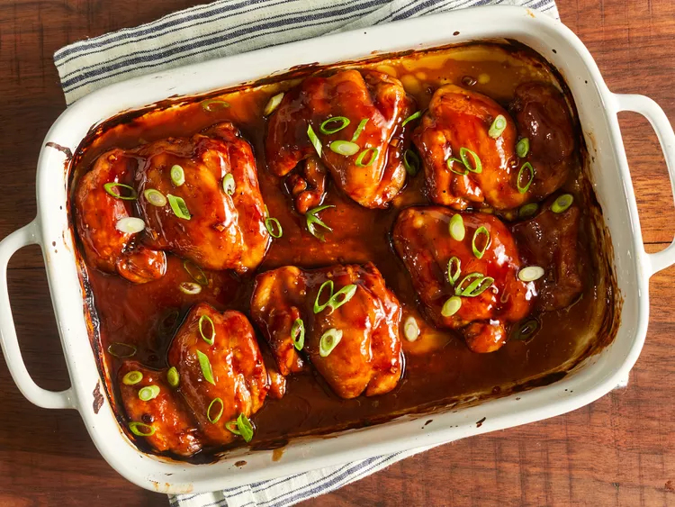

Baked Teriyaki Chicken

Baked Teriyaki Chicken is a sweet-coated chicken, awesome to go with a bowl of rice and a great source of protein.
Ingredients
1/2 Cup White Sugar
1/2 Cup Soy Sauce
1/4 Cup Cider Vinegar
1 Tablespoon Cornstarch
1 Tablespoon Cold Water
1 Clove Minced Garlic
1/2 Teaspoon Ground Ginger
1/4 Teaspoon Ground Black Pepper
12 Boneless Chicken Thighs
Steps to make Baked Teriyaki Chicken
- Preheat the oven to 425 degrees F (220 degrees C). Lightly grease a 9x13-inch baking dish.
- Combine sugar, soy sauce, cider vinegar, cornstarch, cold water, garlic, ginger, and pepper in a small saucepan over low heat. Simmer, stirring frequently, until teriyaki sauce thickens and bubbles, 3 to 5 minutes. Remove from the heat.
- Place chicken thighs in the prepared baking dish. Brush both sides of each thigh with the sauce. Reserve any extra sauce for basting.
- Bake in the preheated oven for 30 minutes.
- Flip chicken and brush with sauce. Continue to bake, basting with remaining sauce every 10 minutes, until no longer pink and juices run clear, 20 to 30 more minutes.
- Serve hot and enjoy!
Return to Home